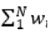

What’s New in Spectre Circuit Simulator 19.1
This document contains the following sections:
- Supported Platforms and Operating Systems
- Licensing Changes
- New and Enhanced Features in the SPECTRE 19.1 ISR8
- New and Enhanced Features in SPECTRE 19.1 ISR7
- New and Enhanced Features in SPECTRE 19.1 ISR6
- New and Enhanced Features in SPECTRE 19.1 ISR5
- New and Enhanced Features in SPECTRE 19.1 ISR4
- New and Enhanced Features in SPECTRE 19.1 ISR3
- New and Enhanced Features in SPECTRE 19.1 ISR2
- New and Enhanced Features in SPECTRE 19.1 ISR1
- New and Enhanced Features in SPECTRE 19.1
Supported Platforms and Operating Systems
The following platforms and operating systems are supported:
Licensing Changes
For information on licensing, refer to the Licensing section of the Spectre Classic Simulator, Spectre APS, Spectre X, and Spectre XPS User Guide.
New and Enhanced Features in the SPECTRE 19.1 ISR8
The SPECTRE 19.1 ISR8 release contains the following new and enhanced features:
Weighting in Fault Analysis Enhanced
In this release, fault weighting has been enhanced to be compatible for faults being rerun. Now, weighting is not saved in fault list when it is generated with spectre_ddmrpt. Instead, the faultsid information is saved to retrieve the original weighting value.
LDS Sampling Parameter Generation Enhanced
In earlier Spectre releases, the same random number sequence was applied to process and mismatch variations when variations=all was used. This caused mismatch in variables between variations=mismatch and variations=all.
Starting with this release, different random number sequences are applied to process and mismatch variations. With this change, the mismatch variables are consistent between variations=mismatch and variations=all.
This may cause the Monte Carlo results to be different in earlier Spectre releases and the current release. However, the statistic std, mean, max, min summary for large samples is not affected.
You can use the force_consistent_mismatch_sequence=no option for backward compatibility.
New and Enhanced Features in SPECTRE 19.1 ISR7
The SPECTRE 19.1 ISR7 release contains the following new and enhanced features:
- LX and VX modes of Spectre X Enhanced
- Support for Open Faults Collapsing Added in Fault Analysis
- Device Model Change
LX and VX modes of Spectre X Enhanced
The LX and VX modes of Spectre X have been enhanced to support the Spectre save/recover feature. The CX, AX, and MX modes already support save/recover since the SPECTRE 19.1 base release.
Support for Open Faults Collapsing Added in Fault Analysis
When two open faults are equivalent, they can be collapsed only if the union of all terminals from {…} of both statements is exactly the full set of terminals connected to the given node.
Examples
-
Open faults defined on the same node but contain no identical terminals disconnected from the given node, as shown below.
open_1 ( 2 ) r=1e9 { R }
open_2 ( 2 ) r=1e9 { C }
-
For two terminal primitives, open faults for each terminal are identical
open_1 ( 2 ) r=1e9 { R }
open_3 ( 1 ) r=1e9 { R }
For more information, refer to the Fault Collapsing and Weighting Function in the Spectre Classic Simulator, Spectre APS, Spectre X, and Spectre XPS User Guide.
Device Model Change
Starting with this release, support for the b3soipd device model has been discontinued. There is no change in any other Spectre SOI device model.
New and Enhanced Features in SPECTRE 19.1 ISR6
The SPECTRE 19.1 ISR6 release contains the following new and enhanced features:
Support for Global Time Window Added
In this release, a new global option, save_time_window, has been added to define the time window for which all waveform data needs to be saved.
Fault Analysis Enhanced
In this release, following enhancements have been made in fault analysis
-
Fault Events Triggered by Asserts (ETA) are now supported in fault analysis. A fault event is specified as follows:
“@(basic_event, N) + delay”
Here:
For more information, refer to the Performing Event-Triggered Analysis during Transient Analysis section in the Spectre Classic Simulator, Spectre APS, Spectre X, and Spectre XPS User Guide. -
A new parameter, faultic, with possible values of
noandyes, has been added in transient analysis. If the value of the parameter is set tono, Spectre uses the nominal solution as an initial guess to start fault simulation with the fault injected. If the value of the parameter is set toyes, dc analysis is enabled with each fault injection when the value of thefaultmethodis set toleadtime. -
Now, when the faultstrobe parameter is set to
yes, the following parameters are expanded in transient fault analysis to add an array of time points for fault simulation:
The fault result at the time points above is also saved in the fault table file. -
A new parameter, faultrampinterval, with possible values of
0and1, has been added that specifies the coefficient (between 0 and 1) to define the size of the time interval to ramp fault conductance after fault injection, when the value of thefaultmethodparameter is set toleadtime.
New and Enhanced Features in SPECTRE 19.1 ISR5
The SPECTRE 19.1 ISR5 release contains the following enhanced feature:
Support for Parameterized dist Added in Monte Carlo Statistical Block
Starting with this release, parameter dist of Monte Carlo analysis can be assigned a global parameter as value, as shown below.
parameters SIGMASCALE_snd = 1
parameters DIST_snd =gauss
statistics {
process {
vary AGIDL_snd dist=DIST_snd std = SIGMASCALE_snd
vary ALIGN1_snd dist=DIST_snd std = SIGMASCALE_snd
vary ALIGN2_snd dist=DIST_snd std = SIGMASCALE_snd
vary CAP_snd dist=DIST_snd std = SIGMASCALE_snd
}
}
New and Enhanced Features in SPECTRE 19.1 ISR4
The SPECTRE 19.1 ISR4 release contains the following new and enhanced features:
Support for +query=mtinfo Added in Spectre X
In this release, like Spectre APS, Spectre X supports +query=mtinfo for recommending the optimum number of cores for a given design.
spectre +preset=mx input.scs +query=mtinfo
A message is displayed in the Spectre X logfile recommending the optimum number of cores required for the given design.
Device Model Change
In this release, the hbt model master in Spectre has been changed to ucsd_hbt to use the AWR-based HBT model.
If you are using SPECTRE 19.1 ISR4 or later versions, you can use the following option to use the hbt model master name for USCD HBT:
opt1 options hbt_model=ucsd_hbt (default hbt value uses the AWR-based model)
New and Enhanced Features in SPECTRE 19.1 ISR3
The SPECTRE 19.1 ISR3 release contains the following new and enhanced features:
- New Options Added to Filter Assert Violations
- Assert mod Parameter Enhanced to Support Subcircuit Device Models
- Fault Analysis Enhanced
- Device Models Support
New Options Added to Filter Assert Violations
In this release two new options, min_peak and max_peak, have been added to the assert statement that report the violations that violate the assert and cross the min_peak or max_peak limit.
Assert mod Parameter Enhanced to Support Subcircuit Device Models
Spectre asserts use the mod=nch parameter to apply asserts to devices with the given device model name nch. By default, the mod parameter does not apply to device model subcircuit or inline subcircuit names.
In this release a new global option, mod_assert_expand with possible values of yes and no (default) has been added that enables you apply the mod parameter to device models or inline subcircuit names if the model statement with the specified name is not found.
Fault Analysis Enhanced
In this release, Spectre fault analysis has been enhanced as follows:
- Following new methods are supported for fault sampling: random, randomweighted, randomuniform, and weightedsorted.
- Confidence interval is now supported in post-processing
-
Parameters
fminandfmaxhave been added inweight_expr.
For more information, see Limiting in Weight Expression in Spectre Classic Simulator, Spectre APS, Spectre X, and Spectre XPS User Guide. -
Parameter weight_factor is now supported in fault generation with
infostatement
Device Models Support
In this release, support for the following device models has been added in Spectre:
New and Enhanced Features in SPECTRE 19.1 ISR2
The SPECTRE 19.1 ISR2 release contains the following new and enhanced features:
- Spectre X Enhanced
- EMIR Analysis Enhanced
- Reliability Analysis Enhanced
- Fault Analysis Enhanced
- Device Models Enhancement
Spectre X Enhanced
In this release, following enhancements have been made in Spectre X:
- Support for EMIR analysis has been added. The Spectre X solver provides improved performance and capacity for large EMIR designs when using the following EMIR methods:
- Support for aging analysis has been added for all preset modes.
EMIR Analysis Enhanced
The behavior of direct EMIR analysis has been changed. Now, when +postlayout or postlayout=hpa command-line options are specified in Spectre APS, both are ignored with a warning message.
Reliability Analysis Enhanced
Aging reliability analysis now supports the following Spectre RF analyses:
Fault Analysis Enhanced
In this release, following enhancements have been made in fault analysis:
-
Support for parametric fault definition has been added. A new option
what=faultparamhas been added ininfoanalysis that is used to generate parametric fault list.
For more information, refer to the Parametric Faults section in Spectre Classic Simulator, Spectre APS, Spectre X, and Spectre XPS User Guide. -
Faults can now be generated as per the IEEE 2427 standard. A new option
faultrulewith possible values of2427andnonehas been added ininfoanalysis. When the value of thefaultruleparameter is specified as2427, device terminals for fault injection are predefined according to the IEEE 2427 standard.
For more information, refer to the Generating Faults According to IEEE P2427 Standard section in the Spectre Classic Simulator, Spectre APS, Spectre X, and Spectre XPS User Guide.
Device Models Enhancement
The PSP103 model has been updated to version=103.7.
New and Enhanced Features in SPECTRE 19.1 ISR1
The SPECTRE 19.1 ISR1 contains the following new and enhanced features:
Checklimit Statement Enhanced
Spectre, by default, reports many violations for a given assert when the violations occur multiple times during transient simulation. A new option, filter, with the possible values of none, progressive, and extreme has been added to the checklimit statement that enables you to reduce the number of violations to the most significant ones.
Fault Analysis Enhanced
In this release, fault analysis has been enhanced as follows:
-
Support for fault collapsing and weighting – Spectre now supports fault collapsing in which two equivalent faults are collapsed into one fault during fault generation with
infostatement. This improves the accuracy of detection coverage. In addition, support for fault weighting has been added that is specified in thefaultsstatement as an expression. For more information, see Fault Collapsing and Weighting Function in Spectre Classic Simulator, Spectre APS, Spectre X, and Spectre XPS User Guide. -
Support for fault weighted likelihood for single and multiple fault blocks – The weighted likelihood of the
nthfault is calculated using the formulaWn=wn/ whereNis the number of faults. In addition, a constant parameterweight_factoris available for weighting multiple fault blocks. For more information, see
- Support for Defect Detection Using Weighted Likelihood – Spectre calculates the weighted likelihood for each fault based on its ratio to the total weights within the block. The value of weighted likelihood is saved in a fault table file. The weighted likelihood is used to compute the defect coverage in the generation of both detection matrix and functional safety reports. For more information, see Defect Detection Using Weighted Likelihood in Spectre Classic Simulator, Spectre APS, Spectre X, and Spectre XPS User Guide.
-
Support for Weighted Likelihood Sampling – When parameter
weightorweight_expris defined in the fault list, Spectre chooses the large weighted likelihood for fault simulation instead of random sampling. For more information, see Weighted Likelihood Sampling in Spectre Classic Simulator, Spectre APS, Spectre X, and Spectre XPS User Guide.
New and Enhanced Features in SPECTRE 19.1
The SPECTRE 19.1 release contains the following new and enhanced features:
- New Spectre X Simulator Introduced
- New Dynamic Check Added
- Dynamic Checks Enhanced
- New Static Check Added
- Assert Statement Enhanced
- Checklimit Statement Enhanced
- Info Statement Enhanced
- Spectre Fault Analysis Enhanced
- Spectre Thermal Analysis Enhanced
New Spectre X Simulator Introduced
Recent technology developments, advanced node adoption, and “More than Moore” design have forced analog and custom IC designers to adopt new design practices to benefit from these advancements. These changes have resulted in the need to simulate larger designs with more postlayout parasitics. In addition, many custom IC designs such as flash memory, MRAM, sensor arrays, and so on, now require SPICE accurate simulations.
To meet these demands, a new SPICE engine with much more performance and capacity than the current generation of circuit simulators is needed. The Cadence® Spectre® X Simulator, the next generation of the Spectre circuit simulator, has been developed to address the need for a simulator capable of simulating the next generation of analog, mixed-signal, and custom IC designs.
Spectre X includes two major technologies – enhanced multi-core simple use model simulation capacity and performance with +preset and a highly distributed circuit simulation with +xdp.
For more information on the Spectre X simulator, refer to the The Spectre X Circuit Simulator chapter in the Spectre Classic Simulator, Spectre APS, Spectre X, and Spectre XPS User Guide.
EMIR Analysis Enhanced
The rail-to-rail EMIR feature r2rvmin has been enhanced to support advanced filtering, based on tap device instance, and model name, boundary box, and layer name. In addition, a name can be assigned to each r2rvmin check, and an enhanced r2rvmin report that shows how the filtering is applied has been added.
New Dynamic Check Added
In this release, a new dynamic check, dyn_float_tran_stat, has been added. The check identifies the nodes that are in high impedance state at a user-specified time. It deploys a statistical method of forcing (pinging) different voltage levels or voltage ramp ups to all nodes and detecting the floating nodes based on the changes in current in the connecting devices.
Dynamic Checks Enhanced
The following dynamic checks have been enhanced:
| Check Name | Description |
|
The |
|
New Static Check Added
In this release, a new static check, static_highfanout, has been added that detects MOSFETs that have a gate connected to a highfanout node.
Assert Statement Enhanced
In this release, the assert statement has been enhanced as follows:
-
The global option, devcheck_stat controls whether and how the enabled asserts in a Spectre simulation are reported in the log file. In SPECTRE 19.1 the default value of
devcheck_stathas been changed tononeto eliminate large assert related output being in the log file. -
A new option skip_dev_inside_subckt has been added that enables you to skip the devices inside a subcircuit. For example:
chk_assert assert subs=[...] skip_dev_inside_subckt=[
sub1.inst1subt2.inst2..]...
Checklimit Statement Enhanced
The param option now supports skip_dev_inside_subckt as value that enables you to skip individual devices or subckt instances for the selected subcircuits for the specified assert(s). For example:
set1 checklimit asserts=[name of asserts] param=skip_dev_inside_subckt value=[sub1.inst1sub2.inst2...]
Info Statement Enhanced
The what parameter of the info statement now supports new values netcap and moscap These two new features enable you to print the net and MOSFET capacitance reports. For example:
info1 info what=netcap where=file
info2 info what=moscap where=file
For more information, refer to the Printing the Capacitance Values of Nets and Printing the Terminal Capacitances of MOSFETs sections in the Spectre Classic Simulator, Spectre APS, Spectre X, and Spectre XPS User Guide.
Spectre Fault Analysis Enhanced
The Spectre fault analysis has been enhanced as follows:
-
Support for custom faults added
Spectre supports three types of custom faults: custom insertion, custom replacement and custom open. The custom fault model is specified as a subcircuit and defined outside the fault block. The custom subcircuit instances are specified in the custom fault block. Spectre injects the custom instances into the original netlist when fault simulation is requested and applies the connectivity accordingly.
For more information, refer to the Custom Faults section in the Spectre Classic Simulator, Spectre APS, Spectre X, and Spectre XPS User Guide. -
Support for Verilog-A asserts added
In addition to the device base asserts, Spectre supports Verilog-A asserts that can be used for fault detection and functional safety analysis.
For more information, refer to the Verilog-A Asserts section in the Spectre Classic Simulator, Spectre APS, Spectre X, and Spectre XPS User Guide. -
Random sampling added for fault selection
Spectre provides the capability to enable part of the fault list, or some fault blocks to be selected only for fault analysis. You can now apply simple random sampling to the faults selected using thefaultsblock(s). You may use eitherfaultsamplenumto set the specific number of samples, orfaultsampleratioto set the percentage (in the range from 0 to 100) to perform random sampling.
For more information, refer to the Fault Selection and Sampling section in the Spectre Classic Simulator, Spectre APS, Spectre X, and Spectre XPS User Guide. -
Support for automated three-step process added for performing functional safety analysis
You can use the+fsacommand-line option to automate the process of performing functional safety analysis. You need at least one assert statement with the safecheck parameter specified in the netlist to run the automated flow.
For more information, refer to the Using the Automated Three-Step Process section in the Spectre Classic Simulator, Spectre APS, Spectre X, and Spectre XPS User Guide. - Support for Single Point Fault (SPF) and Latent Fault (LF) definitions added to analyze failure modes in the design.
-
Support for distributed processing added in transient fault analysis.
For more information, refer to the Job Distribution in Transient Fault Analysis section in the Spectre Classic Simulator, Spectre APS, Spectre X, and Spectre XPS User Guide.
Spectre Thermal Analysis Enhanced
Starting with the SPECTRE 19.1 release, Spectre Thermal Analysis supports the following in the package file:
- Support for thermal capacitance and ambient temperature has been added in the thermal package file. For more information, refer to the Thermal Package File section in the Spectre Classic Simulator, Spectre APS, Spectre X, and Spectre XPS User Guide.
- Support for trench structures has been added in the thermal package file. For more information, refer to the Trench Structure Support section in the Spectre Classic Simulator, Spectre APS, Spectre X, and Spectre XPS User Guide.
Return to top